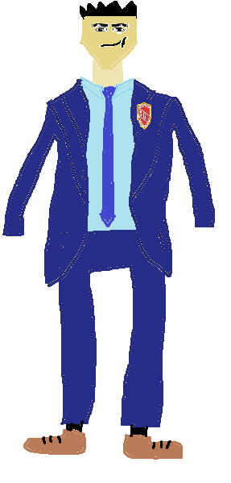

Wizerunek Ucznia (Zgodny z Zasadami Śl.TZN)
Wygląd ucznia na terenie szkoły musi być skromny, schludny i bezpieczny.
- Strój codzienny: Granatowy garnitur i krawat, błękitna koszula, przypinana tarcza Śl.TZN, buty granatowe, brązowe lub czarne, czarne lub granatowe skarpetki .
- Długość i fason: Bluzki i koszulki muszą zakrywać ramiona, brzuch oraz plecy (zakaz głębokich dekoltów). Spódnice lub spodenki muszą sięgać co najmniej do połowy uda.
- Dodatki i makijaż: Zabrania się noszenia wyzywającego makijażu, jaskrawego manicure oraz długich, niebezpiecznych kolczyków (szczególnie na zajęciach warsztatowych i WF).
- Strój galowy: Obowiązkowy podczas uroczystości: biała koszula lub bluzka oraz ciemne spodnie lub spódnica (widoczny na grafice elegancki garnitur z emblematem szkoły).